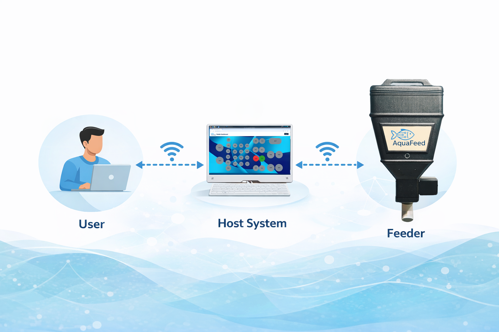
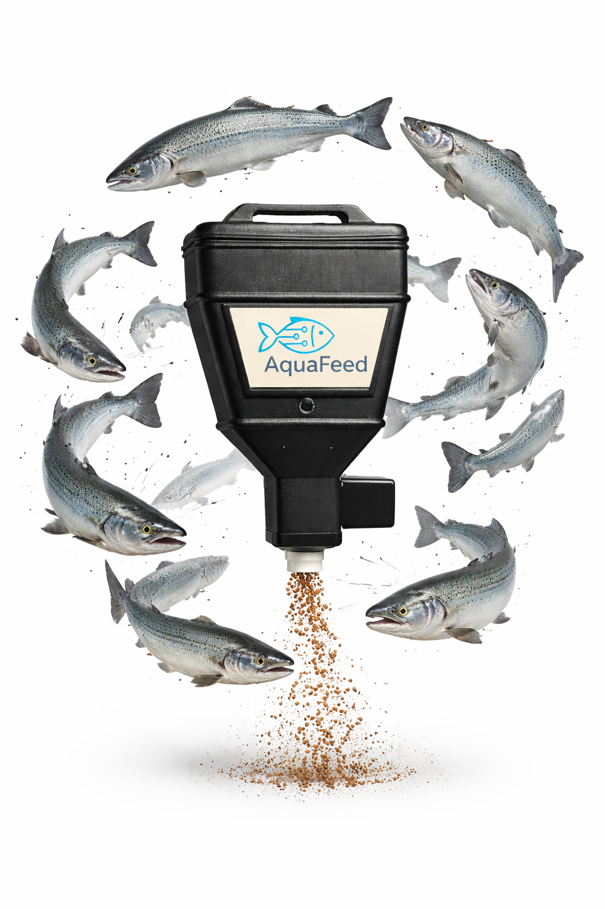
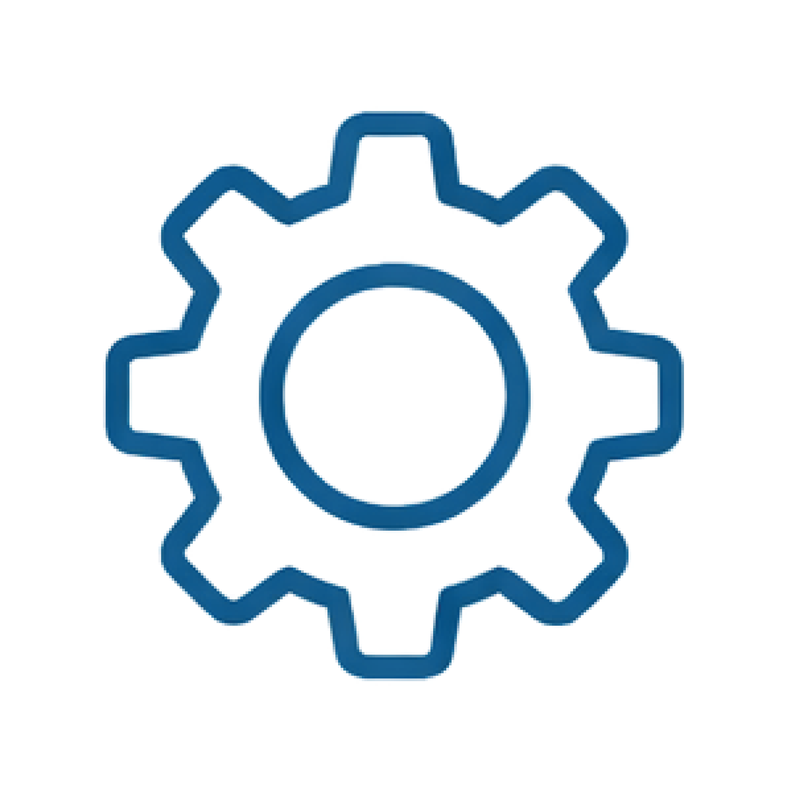
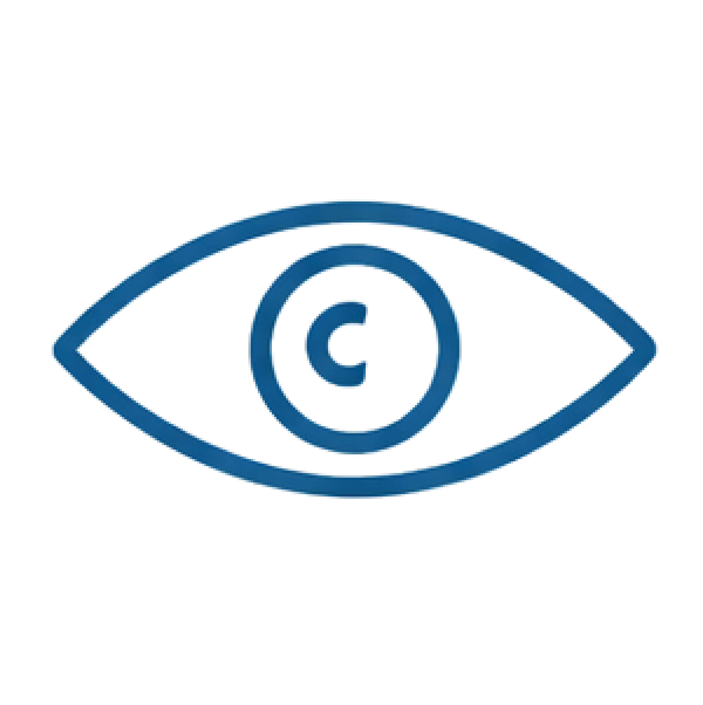
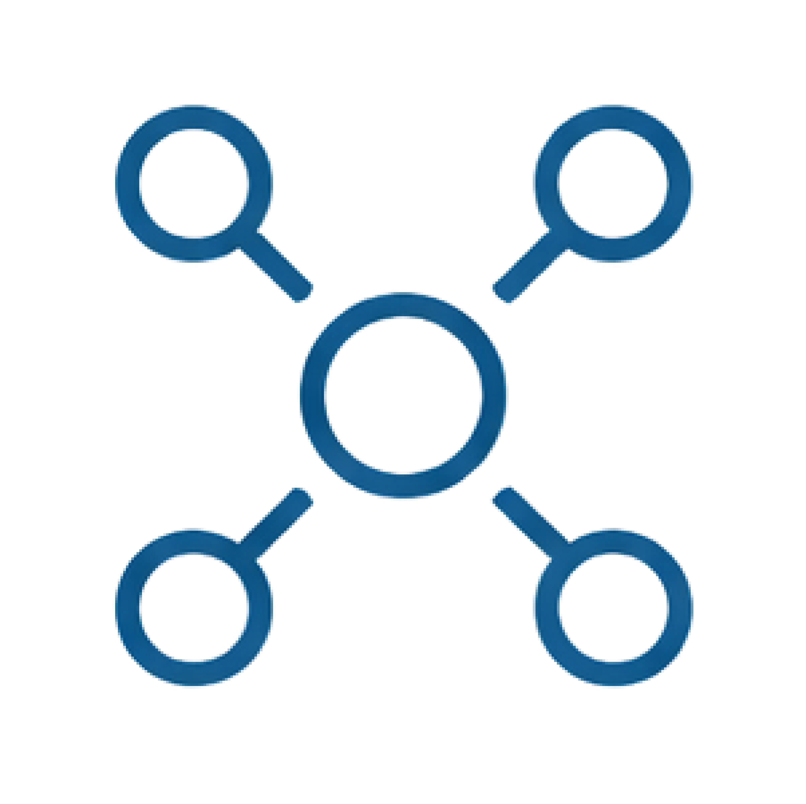

Consistency
Standardize feeding schedules across tanks and systems.
AquaFeed is a Wi-Fi enabled feeding platform designed for research facilities, aquaculture systems, and remote aquatic husbandry. Monitor feeders, schedule feeding events, and manage devices from a central interface.


Standardize feeding schedules across tanks and systems.

Reduce repetitive manual labor with centralized control.

Monitor feeder status and system health remotely.

Manage multiple feeders from one platform.
AquaFeed is an end-to-end connected feeding platform with hardware, firmware, and web-based control software. Each feeder can receive commands, report status, and integrate into a central host system for scheduling, monitoring, and management.


Trigger feedings from a browser-based interface.
Automate recurring feed events.
View feeder status, heartbeat, and error states.
Control multiple units from one host.
Simple onboarding for new feeder devices.
Detect jams, disconnects, or missed heartbeats.
Supports standardized protocols and repeatable experiments.
Can evolve with sensors, authentication, and cloud access.
Possible Use Cases:
AquaFeed helps research labs maintain consistent feeding schedules, reduce manual variability, and support more reproducible experimental workflows.
AquaFeed gives university facilities a centralized way to manage feeders across shared systems, helping staff and researchers save time and improve oversight.
AquaFeed improves feeding consistency and reduces repetitive daily labor, making small hatchery operations easier to manage with limited personnel.
AquaFeed supports precise, repeatable feeding across treatment groups, helping researchers maintain tighter control over experimental conditions.
AquaFeed enables scheduled feeding, remote control, and status monitoring, helping teams manage aquatic systems even when they are off-site.